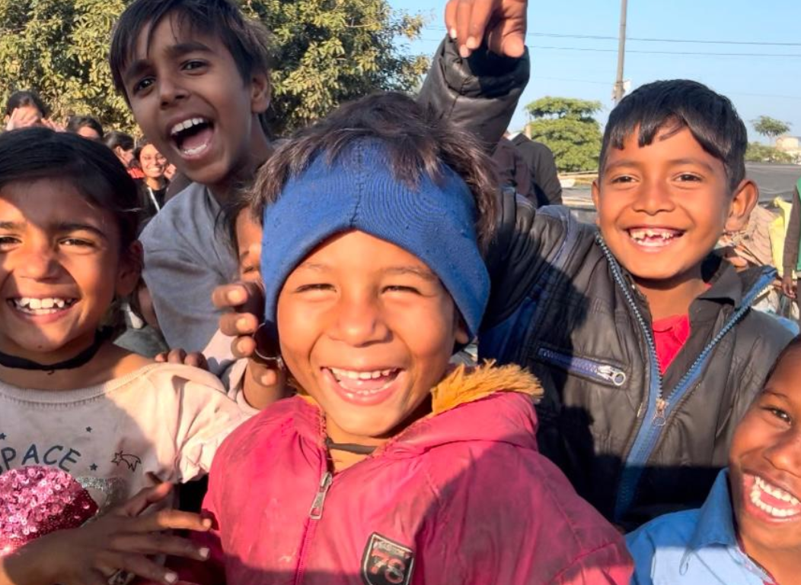
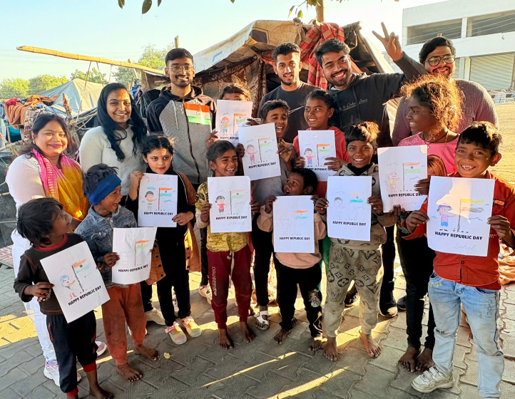
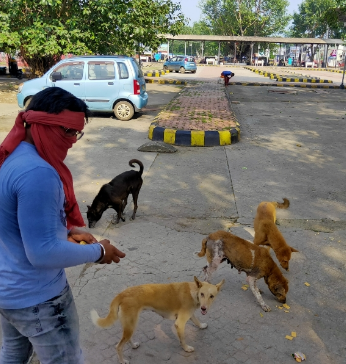
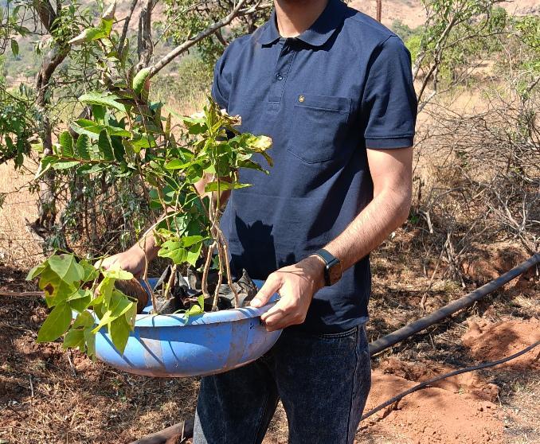
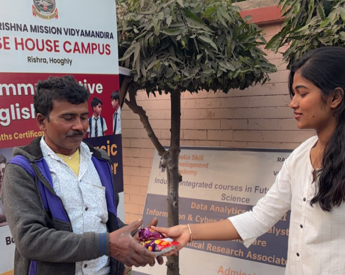
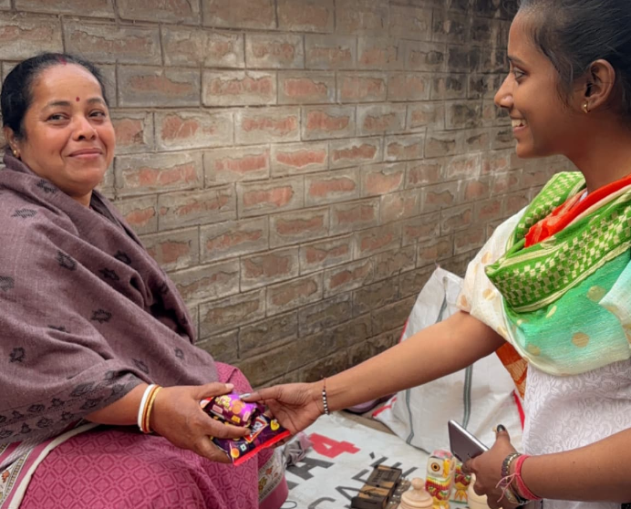
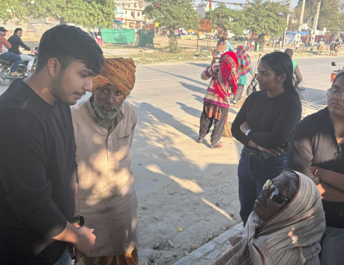

We work towards creating equal opportunities for children, women, animals, and communities through compassion, education, and action.

Who We Are
InAmigos Foundation was founded on September 23, 2020 by Mr. Govind Shukla with a clear vision: a kinder, more equal India. Headquartered in Bilaspur, Chhattisgarh, we work tirelessly to uplift children, women, animals, and underserved communities.
Our work spans food distribution, quality education, women empowerment, environmental sustainability, animal welfare, and livelihood development.
Our Work
Our projects focus on helping people through education, food support, environmental care, and skill development.
Food and clothing distribution for the homeless and underprivileged ensuring no one sleeps on an empty stomach.
Food & Clothing ReliefQuality education for underprivileged children creating spaces where every young mind can learn and dream.
Education for AllWomen empowerment through skill development and financial independence training programs.
Women EmpowermentTree plantation drives and sustainability campaigns healing our planet one sapling at a time.
Environmental ActionAnimal welfare and feeding drives for stray animals spreading love and care beyond human communities.
Animal WelfareSkill development and employability training including internship programs for youth across India.
30,000+ Interns TrainedSocial Impact
Every project addresses a real gap and even small help can change someones life.
Regular feeding drives ensure families have access to nutritious food.
Bachpanshala bridges the education gap for children who cannot afford schooling.
Udaan gives women the skills to achieve financial independence.
Prakriti promotes tree plantation and environmental sustainability.
Jeev ensures street animals receive food, care, and compassion.
Vikas equips youth with professional skills and real world experience.
Real moments from our initiatives, outreach programs, and community activities.

Children participating in an educational awareness program.

Volunteers feeding and caring for stray animals in the community.

Tree plantation drives focused on creating a greener environment.

Providing food and support to families through outreach initiatives.

Empowering women through skill development and awareness programs.

Youth participating in development activities.
Every meal shared, every tree planted, and every child supported brings us one step closer to a kinder society.
"Together, we can create a more inclusive, compassionate, and empowered society where every person grows with dignity and respect."— Mr. Govind Shukla, Founder & CEO, InAmigos Foundation
Whether you volunteer your time, donate resources, or spread the word every action counts. Join thousands of Amigos making a difference every day.